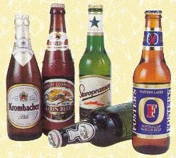
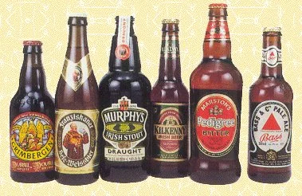
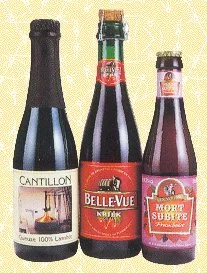

Tipos de cerveza
Las tres grandes familias de la cerveza
Lo que verdaderamente marca de manera contundente la diferencia entre una cerveza y otra es el tipo de fermentación que lo hace posible.
Existen dos tipos básicos de fermentación de la cerveza: la fermentación baja, que se lleva a cabo a bajas temperaturas y en la que las cepas de levadura se depositan en el fondo de la tina, y la fermentación alta, así llamada porque se realiza a altas temperaturas y porque las cepas de levadura suben a la superficie del líquido.
A su vez, la fermentación alta puede producirse con cepas de levadura controlada o con levaduras «salvajes». En el primer caso se llama simplemente fermentación alta, y en el segundo, fermentación espontánea. Estas tres formas de fermentación dan lugar a las tres grandes familias de la cerveza: lager, ale y lambic.
Familia Lager o cervezas de fermentación baja
Para elaborar las cervezas lager se utiliza la fermentación baja. Esta se obtiene con una levadura controlada denominada Saccharomyces carlsbergensis o Saccharomyces uvarum. Este tipo de levadura se deposita en el fondo del mosto, es decir, en la parte baja de la tina, y se caracteriza por producir la fermentación a temperaturas bajas, de entre 5 y 9 °C.
El proceso de fermentación tiene lugar a lo largo de dos semanas, el mosto resultante se somete a un período de guarda, que también debe realizarse a bajas temperaturas, en torno a los 0 °C. Este proceso es precisamente el que da el nombre a la familia lager, ya que el término deriva de la palabra lagerung, que significa almacenamiento en alemán.

La duración de la guarda puede oscilar entre las tres semanas y los nueve meses, si bien algunas lager pueden requerir hasta un año de guarda. Durante este tiempo tiene lugar una segunda fermentación, el mosto va madurando, los restos de levadura se sedimentan y se produce la carbonatación del mosto de forma natural. Las cervezas de la familia lager se elaboran básicamente con malta de cebada y se caracteriza por ofrecer un aspecto limpio (sin partículas en suspensión) y ser bastante espumosas.
En la actualidad, las lager son las cervezas de mayor consumo en el mundo debido, en parte, a que el proceso de fermentación baja es el que mejor se adapta a los modernos métodos industriales. En España, por ejemplo, casi toda la cerveza que se produce corresponde a este primer grupo. .
Familia ale o cervezas de fermentación alta
Esta familia toma su nombre del término que se empleaba en inglés antiguo para denominar la cerveza, la palabra ale. Para elaborar esta cerveza se utiliza una levadura controlada denominada Saccharomyces cerevisiae, que se caracteriza precisamente por producir la fermentación a temperaturas altas (de 15 a 25 °C). Además, las levaduras ascienden desde el fondo de la tina hacia la parte alta del mosto, y forman una corona de espuma.
La fermentación suele durar menos de una semana. Después, se retira casi toda la levadura y se inicia una segunda fermentación que dura unas dos semanas. Esta fermentación secundaria puede producirse a temperaturas bajas o a temperatura ambiente.

Las ale son cervezas con sabores complejos, ricos en matices, y un aroma afrutado. Muchas están elaboradas con malta de cebada, pero otras se preparan con trigo crudo o malteado, e incluso alguna como la oatmeal stout utiliza malta de avena. Las porter y las stout, elaboradas con malta de cebada torrefacta, tienen un color oscuro, casi negro, y un sabor mitad regaliz y mitad caramelo.
Algunas veces se dice que las cervezas de trigo, las stout y las porter forman una familia aparte, pero en realidad son cervezas ale pues se obtienen por medio de la fermentación alta. .
Familia lambic o cervezas de fermentación espontánea
Para fabricar las cervezas lambic (palabra posiblemente derivada de la española alambique) se utiliza la fermentación espontánea, que es el otro tipo de fermentación alta. Esta se produce a altas temperaturas gracias a la actuación de levaduras que se encuentran en estado salvaje en el medio ambiente. Concretamente, se trata de ciertos microorganismos activos denominados Brettanomyces lambicus y Brettanomyces bruxellensis, que únicamente se encuentran en la región de Payottenland (Bélgica).
En la fermentación espontánea se deja airear el mosto para que estas partículas que se encuentran en suspensión en el aire se depositen en las tinas de fermentación. Es un proceso totalmente natural y, por tanto, difícil de controlar, por lo que no es extraño que en ocasiones se produzcan desagradables sorpresas que pueden incluso malograr la producción. En la actualidad, este método solo lo aplican algunos cerveceros belgas.
Las cervezas lambic están elaboradas con un 70% de malta de cebada y un 30% de trigo crudo no malteado y se caracterizan por un aspecto turbio y un aroma vinoso.
Cada una de estas familias comprende a su vez diversos estilos distintos de cerveza. Hay, en total, más de 50 estilos denominados "clásicos", si bien existen matices y variantes inclasificables. .

Sírvete
Palabras clave
Fermentación: es un proceso bioquímico en el que las levaduras transforman los azúcares en alcohol y anhídrido carbónico. La cerveza se obtiene por fermentación de cereales. .
Levadura: es el microorganismo que produce la fermentación. En la elaboración de la cerveza pueden utilizarse distintos tipos de levaduras. La mayor parte son levaduras cultivadas y administradas de forma controlada, pero hay también cervezas en las que intervienen levaduras «salvajes» en un proceso totalmente natural y espontáneo. .
Guarda: muchas de las cervezas se someten a un proceso especial que consiste en dejar reposar el mosto fermentado durante un cierto período de tiempo. Ello permite la sedimentación de los restos de levadura y el proceso de carbonatación natural. .